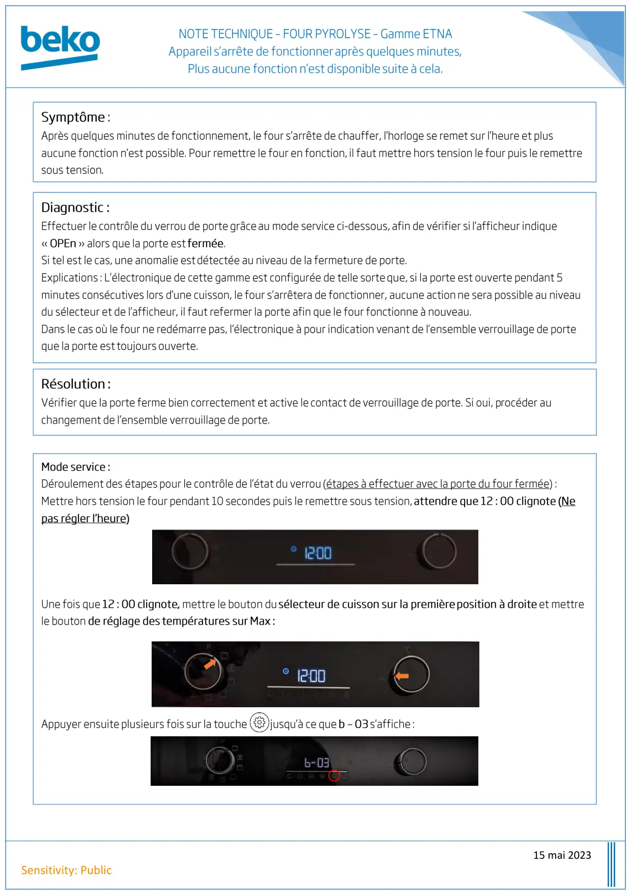
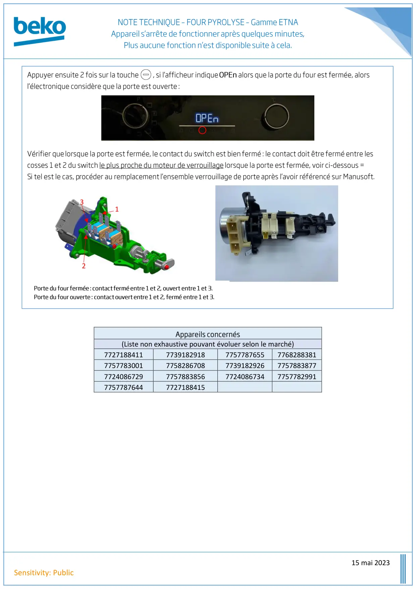

Note Technique Four Pyrolyse Etna S arrete de Fonctionner Quelques Minutes Après Sa Mise en Route

15 mai 2023Sensitivity: Public
1 / 2
15 mai 2023Sensitivity: Public(Liste non exhaustive pouvant évoluer selon le marché)77271884117739182918775778765577682883817757783001775828670877391829267757883877772408672977578838567724086734775778299177577876447727188415123
2 / 2